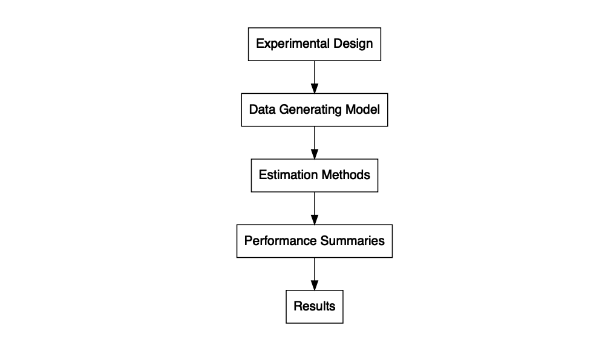

Monte Carlo simulations are computer experiments used to study the performance of statistical methods under known data-generating conditions (Morris, White, & Crowther, 2019). Methodologists use simulations to examine questions such as: (1) how do confidence intervals from ordinary least squares regression perform if errors are heteroskedastic? (2) how does the presence of missing data affect impact estimates from a propensity score analysis? (3) how does cluster robust variance estimation perform when the number of clusters is small? To answer such questions, one can conduct experiments by simulating thousands of datasets based on pseudo-random sampling, applying statistical methods, and evaluating how well those statistical methods recover the true data-generating conditions (Morris et al., 2019).
The goal of simhelpers is to streamline the process of developing and running a simulation study. The package includes two main tools. First, it includes a collection of functions to calculate measures of estimator performance such as bias, root mean squared error, rejection rates, and confidence interval coverage. These functions also calculate the associated Monte Carlo standard errors (MCSE) for the performance measures. The performance calculation functions are divided into three major categories based on the type of measures they calculate: absolute criteria, relative criteria, and inference or classification criteria. The functions are designed to play well with dplyr and fit easily into a %>%-centric workflow (Wickham et al., 2019).
In addition to the set of functions that calculates performance measures and MCSE, the package includes some further convenience functions to assist in programming simulations. These include bundle_sim(), which can be used to create a single function for running a simulation from component pieces. The function takes a function for generating data, a function for analyzing the data, and (optionally) a function for summarizing the results, and constructs a single function for running a full simulation given a set of parameter values and optional arguments, or what we call a “simulation driver.” The simulation driver function can then be applied to a parameter set using evaluate_by_row(), which executes the simulation for each combination of conditions enumerated in the rows of a dataset. This function uses future_pmap() from the furrr package, making it easy to run the simulation in parallel (Vaughan & Dancho, 2018).
Finally, the package also includes a function create_skeleton(), which generates a skeleton outline for a simulation study, and several datasets containing results from example simulation studies.

Installation
Install the latest release from CRAN:
install.packages("simhelpers")Install the development version from GitHub:
# install.packages("devtools")
devtools::install_github("meghapsimatrix/simhelpers")Example
Here, we present a brief example of using the calc_absolute() function to calculate the bias of an estimator. For demonstration, we use the welch_res dataset included in the package, which contains results from an example simulation study comparing the heteroskedasticity-robust Welch t-test to the usual two-sample t-test assuming equal variances.
library(simhelpers)
library(dplyr)
glimpse(welch_res)
#> Rows: 16,000
#> Columns: 11
#> $ n1 <dbl> 50, 50, 50, 50, 50, 50, 50, 50, 50, 50, 50, 50, 50, 50, 50…
#> $ n2 <dbl> 50, 50, 50, 50, 50, 50, 50, 50, 50, 50, 50, 50, 50, 50, 50…
#> $ mean_diff <dbl> 0, 0, 0, 0, 0, 0, 0, 0, 0, 0, 0, 0, 0, 0, 0, 0, 0, 0, 0, 0…
#> $ iterations <dbl> 1000, 1000, 1000, 1000, 1000, 1000, 1000, 1000, 1000, 1000…
#> $ seed <dbl> 204809087, 204809087, 204809087, 204809087, 204809087, 204…
#> $ method <chr> "t-test", "Welch t-test", "t-test", "Welch t-test", "t-tes…
#> $ est <dbl> 0.025836000, 0.025836000, 0.005158587, 0.005158587, -0.079…
#> $ var <dbl> 0.09543914, 0.09543914, 0.08481717, 0.08481717, 0.08179330…
#> $ p_val <dbl> 0.9335212, 0.9335804, 0.9859039, 0.9859109, 0.7807543, 0.7…
#> $ lower_bound <dbl> -0.5872300, -0.5899041, -0.5727856, -0.5741984, -0.6473703…
#> $ upper_bound <dbl> 0.6389020, 0.6415761, 0.5831027, 0.5845155, 0.4877263, 0.4…The conditions tested in this simulation include n1 and n2, indicating the sample sizes of the two groups, as well as mean_diff, indicating the true mean difference between groups. Below we take the results and group the data by method, sample size for group 1, sample size for group 2, and the true mean difference. We then run the calc_absolute() function to calculate the performance criteria and MCSE. The function returns a tibble containing absolute performance criteria and their corresponding MCSE.
welch_res %>%
group_by(method, n1, n2, mean_diff) %>% # grouping
summarize(calc_absolute(estimates = est, true_param = mean_diff))
#> `summarise()` has regrouped the output.
#> ℹ Summaries were computed grouped by method, n1, n2, and mean_diff.
#> ℹ Output is grouped by method, n1, and n2.
#> ℹ Use `summarise(.groups = "drop_last")` to silence this message.
#> ℹ Use `summarise(.by = c(method, n1, n2, mean_diff))` for per-operation
#> grouping (`?dplyr::dplyr_by`) instead.
#> # A tibble: 16 × 15
#> # Groups: method, n1, n2 [4]
#> method n1 n2 mean_diff K_absolute bias bias_mcse var var_mcse
#> <chr> <dbl> <dbl> <dbl> <int> <dbl> <dbl> <dbl> <dbl>
#> 1 Welch t-… 50 50 0 1000 -8.90e-3 0.01000 0.1000 0.00425
#> 2 Welch t-… 50 50 0.5 1000 -5.55e-3 0.0103 0.107 0.00473
#> 3 Welch t-… 50 50 1 1000 -7.26e-3 0.00988 0.0977 0.00423
#> 4 Welch t-… 50 50 2 1000 7.25e-3 0.00981 0.0963 0.00440
#> 5 Welch t-… 50 70 0 1000 -2.66e-3 0.00867 0.0752 0.00330
#> 6 Welch t-… 50 70 0.5 1000 -5.14e-3 0.00895 0.0800 0.00391
#> 7 Welch t-… 50 70 1 1000 -1.12e-2 0.00899 0.0808 0.00358
#> 8 Welch t-… 50 70 2 1000 -7.85e-4 0.00883 0.0781 0.00345
#> 9 t-test 50 50 0 1000 -8.90e-3 0.01000 0.1000 0.00425
#> 10 t-test 50 50 0.5 1000 -5.55e-3 0.0103 0.107 0.00473
#> 11 t-test 50 50 1 1000 -7.26e-3 0.00988 0.0977 0.00423
#> 12 t-test 50 50 2 1000 7.25e-3 0.00981 0.0963 0.00440
#> 13 t-test 50 70 0 1000 -2.66e-3 0.00867 0.0752 0.00330
#> 14 t-test 50 70 0.5 1000 -5.14e-3 0.00895 0.0800 0.00391
#> 15 t-test 50 70 1 1000 -1.12e-2 0.00899 0.0808 0.00358
#> 16 t-test 50 70 2 1000 -7.85e-4 0.00883 0.0781 0.00345
#> # ℹ 6 more variables: stddev <dbl>, stddev_mcse <dbl>, mse <dbl>,
#> # mse_mcse <dbl>, rmse <dbl>, rmse_mcse <dbl>Please see our article Simulation Performance Criteria and MCSE for more details on simulation performance criteria and MCSE calculation. In addition to absolute criteria, we also provide functions to calculate relative criteria, relative criteria for variance estimators, and criteria related to hypothesis testing and confidence intervals.
Our article Simulation Workflow details how to set up a simulation study with functions to generate data, analyze the generated data, calculate performance criteria, and execute the simulation. Our article Presenting Results from Simulation Studies provides example of how to interpret and present results from a simulation study.
Related Work
Our explanation of MCSE formulas and the general simulation workflow facilitated by the package aligns closely with the approach described by Morris et al. (2019). We want to recognize several other R packages that offer functionality for conducting Monte Carlo simulation studies. In particular, the rsimsum package (which has a lovely name that makes me hungry) also calculates Monte Carlo standard errors (Gasparini, 2018). The SimDesign package implements a generate-analyze-summarize model for writing simulations, which provided inspiration for our bundle_sim() tools. SimDesign also includes tools for error handling and parallel computing (Chalmers, 2019).
In contrast to the two packages mentioned above, our package is designed to be used with dplyr, tidyr and purrr syntax (Wickham et al., 2019). The functions that calculate MCSEs are easy to run on grouped data. For parallel computing, evaluate_by_row() uses the furrr and future packages (Bengtsson, 2020; Vaughan & Dancho, 2018). Moreover, in contrast to the rsimsum and SimDesign packages, simhelpers provides jack-knife MCSE for variance estimators. It also provides jack-knife MCSE estimates for root mean squared error.
Another related project is DeclareDesign, a suite of packages that allow users to declare and diagnose research designs, fabricate mock data, and explore tradeoffs between different designs (Blair et al., 2019). This project follows a similar model for how simulation studies are instantiated, but it uses a higher-level API, which is tailored for simulating certain specific types of research designs. In contrast, our package is a simpler set of general-purpose utility functions.
Other packages that have similar aims to simhelpers include: MonteCarlo, parSim, simsalapar, simulator, simstudy, simTool, simSummary, and ezsim.
Acknowledgments
We are grateful for the feedback provided by Danny Gonzalez, Sangdon Lim, Man Chen, Edouard Bonneville, and Felipe Fontana Vieira.
References
Bengtsson, H. (2020). future: Unified parallel and distributed processing in r for everyone. Retrieved from https://CRAN.R-project.org/package=future
Blair, G., Cooper, J., Coppock, A., & Humphreys, M. (2019). Declaring and diagnosing research designs. American Political Science Review, 113(3), 838–859. Retrieved from https://declaredesign.org/paper.pdf
Chalmers, P. (2019). SimDesign: Structure for organizing Monte Carlo simulation designs. Retrieved from https://CRAN.R-project.org/package=SimDesign
Gasparini, A. (2018). rsimsum: Summarise results from Monte Carlo simulation studies. Journal of Open Source Software, 3(26), 739. https://doi.org/10.21105/joss.00739
Morris, T. P., White, I. R., & Crowther, M. J. (2019). Using simulation studies to evaluate statistical methods. Statistics in Medicine, 38(11), 2074–2102.
Vaughan, D., & Dancho, M. (2018). furrr: Apply mapping functions in parallel using futures. Retrieved from https://CRAN.R-project.org/package=furrr
Wickham, H., Averick, M., Bryan, J., Chang, W., McGowan, L. D., François, R., … Yutani, H. (2019). Welcome to the tidyverse. Journal of Open Source Software, 4(43), 1686. https://doi.org/10.21105/joss.01686